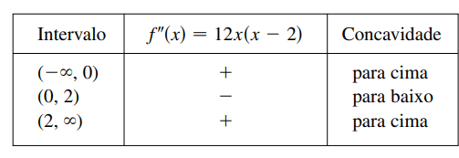

Examine a curva $y = x^4-4x^3$ em relação à concavidade, aos pontos de inflexão e mínimos e máximos locais.
Calculando primeira e segunda derivada:
$$ f'(x) = 4x^3 - 12x^2 = 4x^2(x-3)
\\f''(x) = 12x^2 - 24x = 12x(x-2)$$
Para encontrarmos os números críticos, fazemos $f'(x) = 0$ e obtemos $x= 0$ e $x=3$. Para usar o Teste da Segunda Derivada,
calculamos $f''$ nesses pontos críticos:
$$ f''(0) = 12x(x-2) \rightarrow f''(0) = 0
\\ f''(3) = 12x(x-2) \rightarrow f''(3) = 36 > 0
$$
- Uma vez que $f'(3)=0$ e $f''(3) > 0$, $f(3)= -27$ é um mínimo local.
- Uma vez que $f''(0) = 0$, o Teste da Segunda Derivada não fornece informações sobre o número crítico 0.
Mas, uma vez que $f'(x) < 0$ para $x < 0 $ e também para $0 < x < 3$, o Teste da Primeira Derivada nos diz que $f$ não tem um máximo ou mínimo local em 0.
Como $f"(x)=0$ quando $x = 0$ ou 2, dividimos a reta real em intervalos com esses números como extremidades e completamos a seguinte tabela.

- O ponto (0, 0) é um ponto de inflexão, uma vez que a curva muda de côncava para cima para côncava para baixo aí.
- Também (2, -16) é um ponto de inflexão, uma vez que é ali que a curva muda de côncava para baixo para côncava para cima.